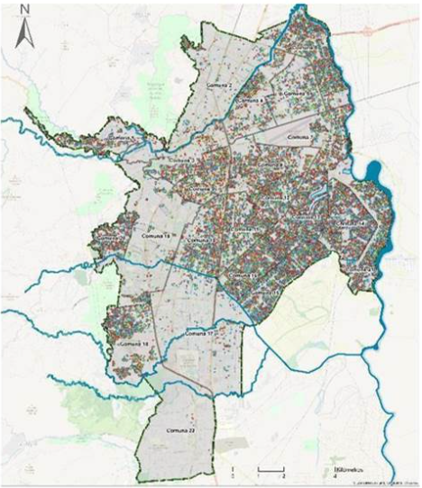
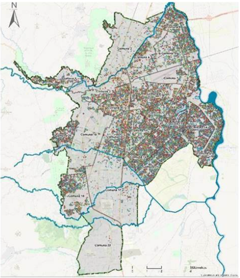

¿Qué es el dengue?
El dengue es una enfermedad viral aguda causada por el virus del dengue (DENV), que pertenece al género Flavivirus y presenta cuatro serotipos distintos: DENV-1, DENV-2, DENV-3 y DENV-4. Es transmitido principalmente por el mosquito Aedes aegypti, un vector de hábitos diurnos, domiciliarios y altamente antropofílico.
Clínicamente, se presenta desde fiebre clásica hasta formas graves como el dengue hemorrágico, caracterizado por extravasación plasmática, sangrados severos y disfunción orgánica. Se transmite cuando un mosquito hembra pica a una persona infectada y posteriormente a otras.
Es un problema creciente de salud pública en zonas tropicales y subtropicales, especialmente en América Latina, sudeste asiático y África.

Contexto histórico y evolución del dengue en Cali
Santiago de Cali presenta un comportamiento endémico del dengue con picos epidémicos. Fuertes-Bucheli et al. (2016) evidenciaron conglomerados de dengue, Zika y chikunguña entre 2014–2016 en comunas del centro-este y noreste, zonas vulnerables y densamente pobladas.
Abonia et al. (2021) reportaron ciclos epidémicos en la comuna 6 entre 2015 y 2019. La co-circulación de los cuatro serotipos aumenta el riesgo de formas graves, especialmente en niños.
Factores que favorecen su propagación
- Climáticos: Temperaturas elevadas, alta humedad, lluvias intensas.
- Ambientales/infraestructura: Agua estancada, residuos sólidos, criaderos.
- Socioeconómicos: Pobreza, servicios públicos deficientes, alta densidad.
- Urbanización/movilidad: Urbanización no planificada, movilidad alta.
Ciclo de vida del mosquito Aedes aegypti
- Huevo: En paredes de recipientes con agua limpia.
- Larva: Se desarrolla en agua, 4 estadios larvales.
- Pupa: Fase flotante, no se alimenta.
- Adulto: Hembra pica para alimentar huevos. Mayor actividad en la mañana y tarde.
Ruiz-Polo et al. (2024) destacan su adaptabilidad en contextos rurales y climáticamente extremos.
Zonas críticas y distribución espacial en Cali
El análisis SIG ha identificado zonas críticas: Comunas 3, 6, 7, 13 y 15 concentran la mayor cantidad de casos. Se observan altos niveles de criaderos positivos, viviendas precarias, cercanía a canales, lotes baldíos y deficiencias en servicios públicos.
 

Impacto en la salud pública
- Alta morbilidad en niños y jóvenes.
- Aumento en demanda hospitalaria e ingreso a UCI.
- Presión financiera al sistema de salud.
- Riesgo de mortalidad en casos graves o coinfecciones.
Respuestas institucionales y tecnologías aplicadas
Respuestas institucionales: INS: Protocolos de vigilancia activa, pasiva y comunitaria. Campañas de eliminación de criaderos y uso de larvicidas. Articulación intersectorial local.
Tecnologías aplicadas: SIG y teledetección para mapear casos y riesgos. Sistemas de Alerta Temprana (SAT). PostgreSQL/PostGIS para bases de datos espaciales. Modelos espacio-temporales para detectar brotes.
Distribución global del dengue